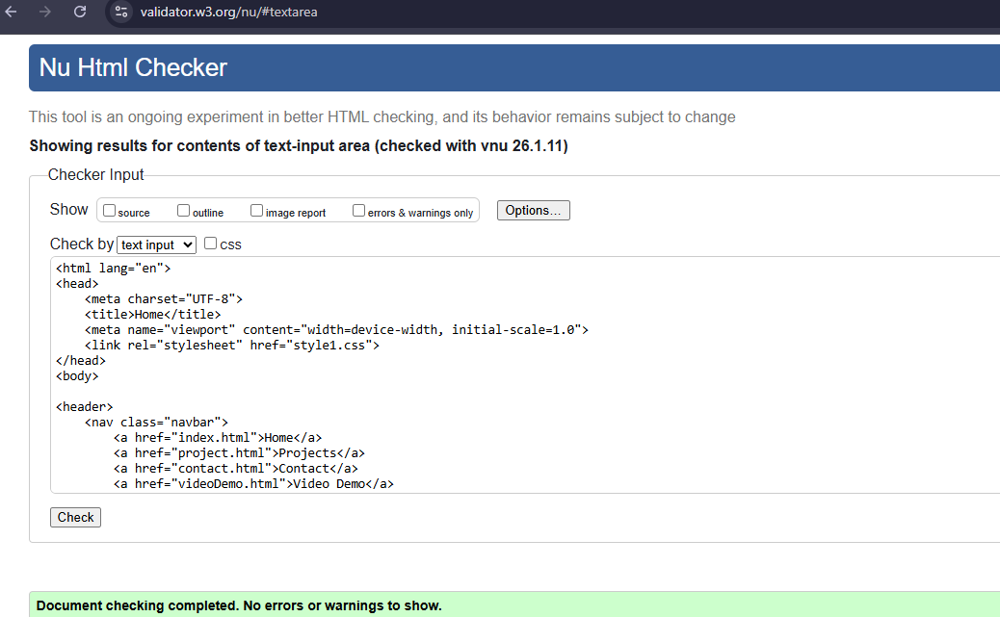
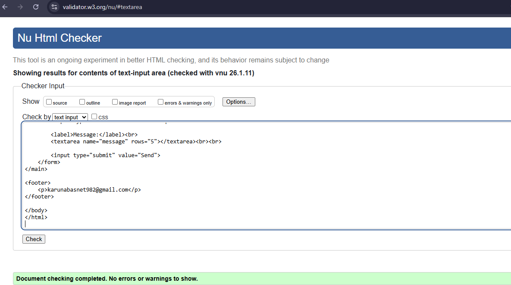
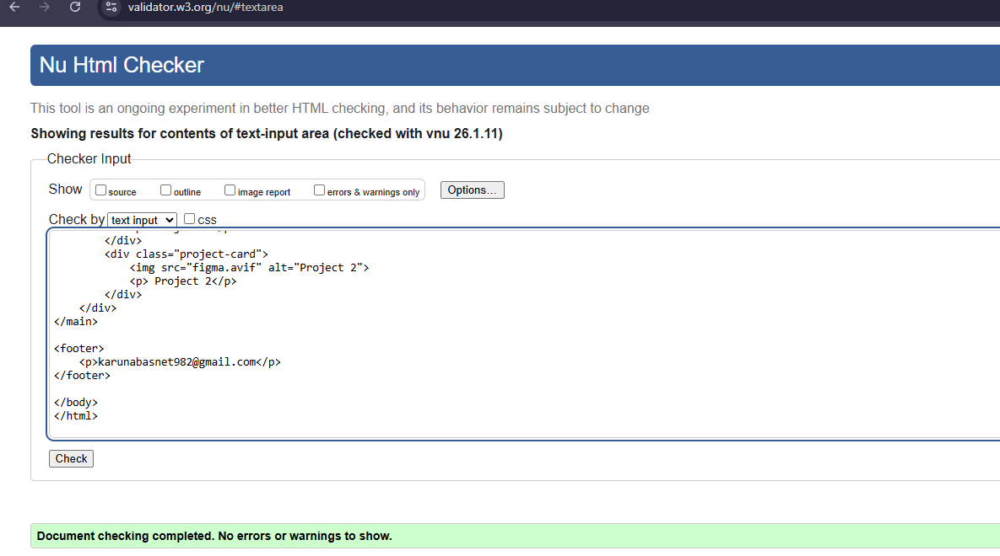
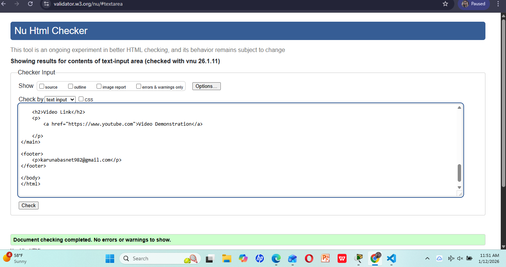

Site Report
This portfolio website documents my journey and learning process in web development. It includes multiple pages such as Home, Projects, Contact, Video Demo, and this Site Report. The entire site is built using simple HTML and CSS. When I first started, it felt challenging because I was not fully comfortable with structuring pages, linking files correctly, and understanding how different tags worked together. However, as I continued creating and testing each page, I learned a lot and became more confident in building a functional and organized website.
One of the biggest challenges I faced was debugging various issues that appeared during development. These included broken layouts, missing images, CSS not applying properly, and incorrect or missing HTML tags. Using online HTML and CSS validators helped me to identify specific errors and warnings. This made it easier to fix mistakes quickly and understand why some elements were not displaying as expected. I also had to make decisions about colours, fonts, spacing, alignment, and the overall layout. To keep the website user-friendly, I chose a simple and clean design so that the content remains easy to read and navigate.
Overall, this project has greatly improved my understanding of web development. It has strengthened my skills in writing clean code, organizing files, and planning the structure of a website. More importantly, it has given me a solid foundation to build more advanced projects in the future. This experience helped me understand how real websites are planned, designed, revised, and implemented step-by-step. Working on this portfolio has motivated me to continue learning and improving my web development skills.
Validation Screenshots
[Insert HTML & CSS validation screenshots here]
Video Link




 Video Demonstration
Video Demonstration